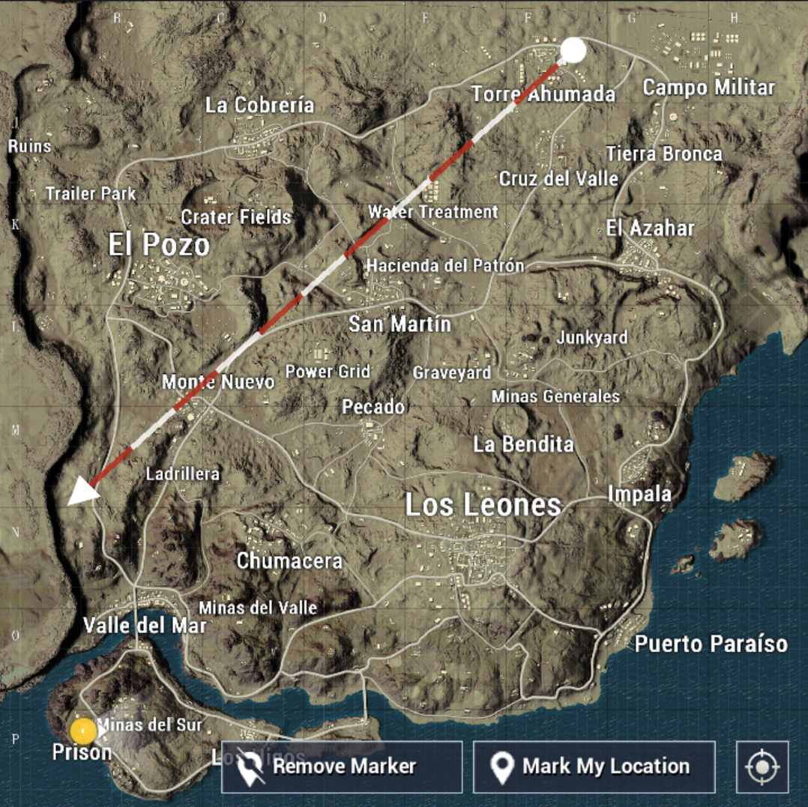

MAP
Miramaris the 2nd playable map for BATTLEGROUNDS. Initially slated to be a 4x4 km map,Miramar is a 8x8km city-centric map with a open desert plain and rural areas.Development on this map began in July 2017, PUBG Corp used the official release update (1.0 update) to test Miramar in 3 rounds of testing phases.

ROYALE PASS SEASON 2
- A brand new feature!
- Now you can collect rewards for every new tier reached in Season 2.
- Complete daily and weekly missions to earn points and increase your rank. Complete a certain number of missions every week for additional crates.
- Reach a new Royale Pass rank to unlock its rewards. Players with a busy schedule have the option to purchase ranks directly to unlock rewards.
- An elite version of the Royale Pass is also available. Purchasing the Elite Royale Pass unlocks elite missions to earn more points and collect additional rewards for each rank.
FIRST PERSON PERSPECTIVE
- Added 1st person perspective variation to Classic Mode.
- First person perspective has its own tier system.
IMPROVEMENT
- Spectator mode smoothness improved.
- Striking sounds and effects added to melee combat.
- Parachute camera smoothness improved.
- Initial parachute speed increased to match the PC version.
- Improved climbing check during running.
- Picture styles now available on all devices.
- Added sound effects for breaking doors.
- Improved display of personal information and results.
- Improved team invitation flow.
WEAPONS
- Assault Rifles
- Submachine Guns
- Sniper Rifles
- Light Machine Guns
- Shotguns
- Pistols
- Melee Weapons
VEHICLES
- Buggy - Carries 2.
- UAZ (Open Top) - Carries 4.
- UAZ (Closed Top) - Carries 4.
- Sidecar Motorcycle - Carries 3.
- PG-117 (Water) - Carries 4.
ARCADE MODE
- 100 players enter a smaller zone with triple weapon spawns.
- Matches last 20 minutes.
- Since this is Arcade Mode, it does not impact rank.
FIXES
- Fixed the issue where heal and boost items could be used underwater.
- Fixed the issue where characters would get stuck in certain areas on Miramar.
- Fixed the issue where wall textures on some Miramar buildings were not displaying correctly.
- Fixed the issue where certain buildings near by Hacienda del Patron were not displaying correctly.